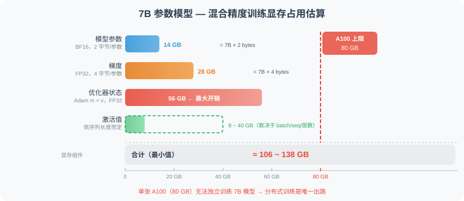
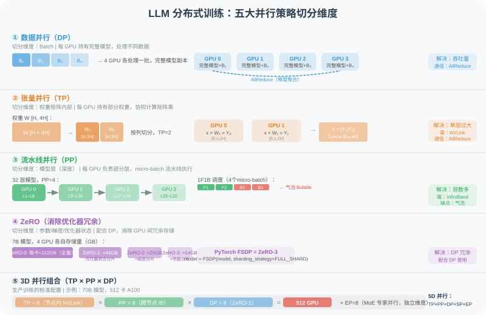
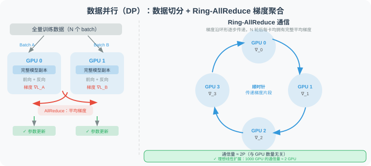
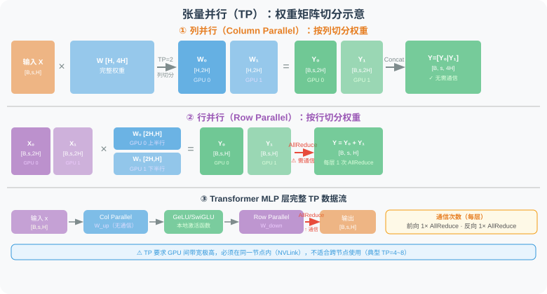
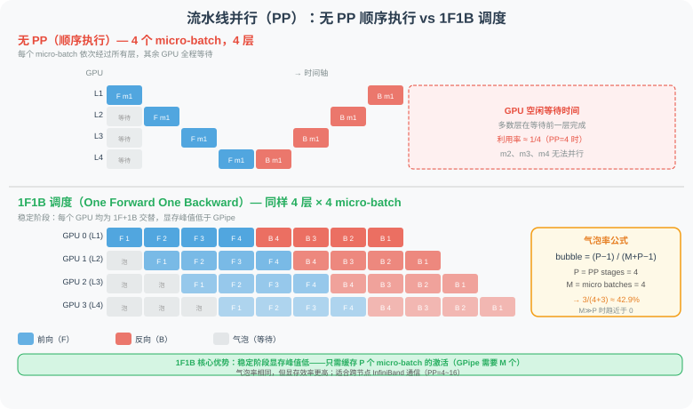
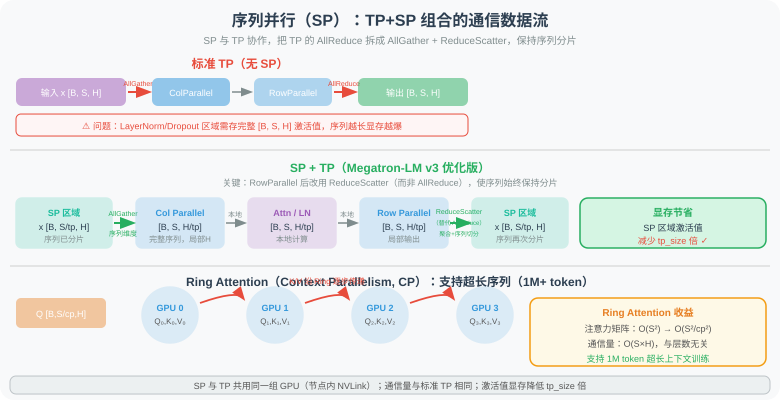
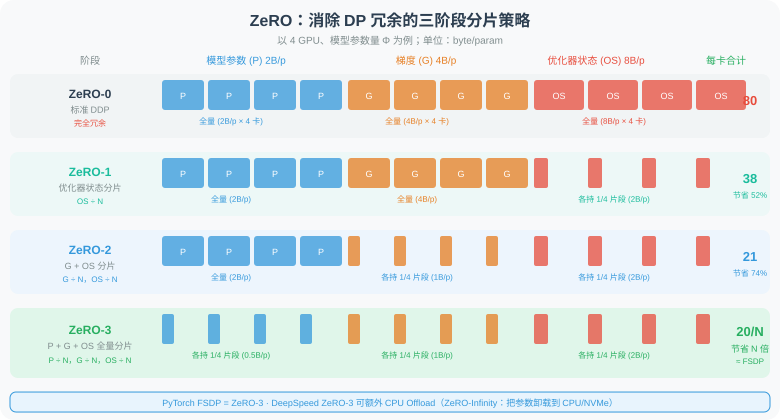
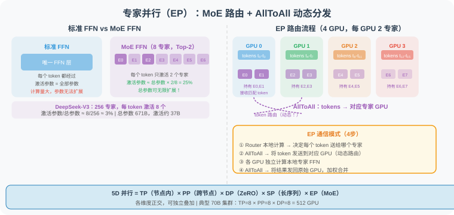
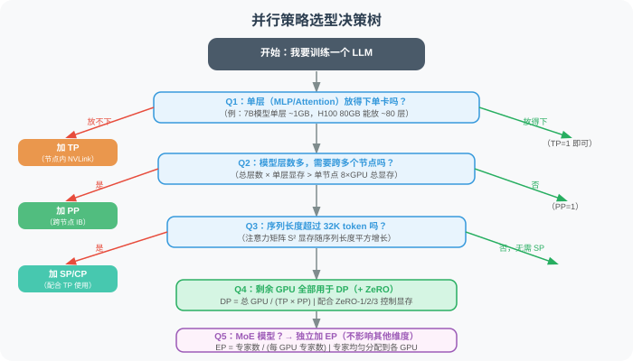

11.2b 分布式训练基础：DP / TP / PP / SP / ZeRO
🖥️ "训练一个 70B 参数模型，单卡 A100（80GB 显存）根本放不下——即便放得下，等你训到退休也没训完。分布式训练不是锦上添花，而是大模型存在的前提。"
为什么需要分布式训练？
在理解各种并行策略之前，先搞清楚显存墙和算力墙这两个核心约束。
显存墙：一张卡装不下
以训练一个 7B 参数的模型为例，混合精度训练（BF16）时，显存占用来自以下几个部分：

如上图所示，优化器状态（Adam 的 m + v 动量）是最大的开销来源，单项就超过 A100 的全部显存。加上参数、梯度和激活值，7B 模型混合精度训练需要 106~138 GB，远超单卡 A100 的 80 GB 上限。
算力墙：一张卡等不起
以 Llama-3 70B 为例，训练 1T tokens 大约需要 次浮点运算：
单张 A100（312 TFLOPS）需要：
用 1000 张 A100 组成集群，仍需 15 天，这才是实际训练的时间规模。
分布式训练通过将计算和存储分散到多个 GPU 上，同时解决这两个问题。
五大并行维度总览
现代 LLM 训练综合使用最多 5 种并行维度，它们针对的是计算图的不同切分轴：

| 并行策略 | 英文 | 缩写 | 切分维度 | 解决的核心问题 |
|---|---|---|---|---|
| 数据并行 | Data Parallelism | DP | Batch 维度 | 训练速度（吞吐量） |
| 张量并行 | Tensor Parallelism | TP | 权重矩阵维度 | 单层参数过大 |
| 流水线并行 | Pipeline Parallelism | PP | 模型层（深度）维度 | 层数过多 |
| 序列并行 | Sequence Parallelism | SP | 序列长度维度 | 长序列激活值过大 |
| 专家并行 | Expert Parallelism | EP | MoE 专家数维度 | MoE 模型专家过多 |
ZeRO 是一种优化器状态分片技术，配合 DP 使用，严格说不属于新的并行维度，但对显存优化至关重要。
一、数据并行（DP / DDP）
核心思路
数据并行是最简单、最常用的并行策略：每个 GPU 持有完整的模型副本，但处理不同的数据子集，最后聚合梯度更新参数。

如上图左侧所示，每个 GPU 拥有完整模型副本，分别对不同的 Batch 做前向 + 反向计算，然后通过 AllReduce 聚合平均梯度，同步更新所有副本的参数。右侧是 Ring-AllReduce 的通信方式——各 GPU 排成一个环，梯度片段沿环传递，每张卡的通信量与 GPU 数量无关，实现近似线性扩展。
DDP vs DP
PyTorch 提供两种数据并行实现：
import torch
import torch.nn as nn
from torch.nn.parallel import DistributedDataParallel as DDP
from torch.nn.parallel import DataParallel as DP
# ─── 方式一：DataParallel（DP）——单机多卡，简单但有瓶颈 ───
# 问题：主卡（GPU 0）负责汇聚梯度，成为通信瓶颈
# 问题：各 GPU 显存不均衡（主卡负担更重）
model = MyModel().cuda()
model = DataParallel(model, device_ids=[0, 1, 2, 3])
output = model(input) # 自动分发 batch 到各 GPU
# ─── 方式二：DistributedDataParallel（DDP）——推荐！───
# 优点：每个 GPU 独立计算梯度，Ring-AllReduce 均匀通信
# 优点：支持多机多卡，线性扩展性更好
import torch.distributed as dist
def setup(rank, world_size):
dist.init_process_group("nccl", rank=rank, world_size=world_size)
def train_ddp(rank, world_size, model, dataset):
setup(rank, world_size)
# 每个进程持有一份模型
model = model.to(rank)
model = DDP(model, device_ids=[rank])
# DistributedSampler 保证每个进程看到不同数据
sampler = torch.utils.data.DistributedSampler(
dataset, num_replicas=world_size, rank=rank
)
loader = DataLoader(dataset, sampler=sampler, batch_size=64)
optimizer = torch.optim.AdamW(model.parameters(), lr=1e-4)
for batch in loader:
optimizer.zero_grad()
loss = model(batch)
loss.backward() # DDP 自动在 backward 期间触发 AllReduce
optimizer.step()
AllReduce：梯度聚合的通信算法
DDP 的核心操作是 Ring-AllReduce（已在上图右侧展示）：每个 GPU 把自己的梯度片段沿环形逐步传递，经过 2(N-1) 轮通信后，每个 GPU 都拥有完整的平均梯度。关键性质是通信量与 GPU 数量无关——即使 1000 张卡，每张卡的通信量仍约等于 2 倍参数量，实现理想线性扩展。
DP 的局限性
显存问题：每个 GPU 都要存储完整模型参数 + 梯度 + 优化器状态。对 70B 模型，即使 DP=1000，每张卡仍需 100GB+。这催生了 ZeRO（见后文）。
有效 batch size：global_batch_size = local_batch_size × world_size。DP=1000 时，有效 batch 可能过大导致训练不稳定，需要配合 Gradient Accumulation：
# Gradient Accumulation：模拟大 batch 而不增加实际 batch size
accumulation_steps = 8 # 累积 8 个 mini-batch 才更新一次
for step, batch in enumerate(loader):
loss = model(batch) / accumulation_steps # 缩放损失
loss.backward() # 累积梯度
if (step + 1) % accumulation_steps == 0:
optimizer.step() # 每 8 步才更新
optimizer.zero_grad()
二、张量并行（TP）
核心思路
张量并行将单个权重矩阵在 GPU 之间切分，每个 GPU 只持有矩阵的一部分，并行计算矩阵乘法。
这是 Megatron-LM [1] 提出的核心技术，专门针对 Transformer 的两大密集层：

如上图所示，TP 有两种切分方式：
- 列并行（Column Parallel）：将权重 W 按列切分，各 GPU 独立计算局部输出，最后 Concat 拼接——前向无需通信。
- 行并行（Row Parallel）：将权重按行切分，同时切分输入，各 GPU 独立计算后 AllReduce 求和——前向需要 1 次 AllReduce。
实际 Transformer 的 MLP 层由"列并行 + 激活函数 + 行并行"组成（见图底部数据流），每层共需 2 次 AllReduce（前向 1 次 + 反向 1 次）。
线性层的列并行（Column Parallel Linear）概念：
- 权重 W [H, 4H] 按列切分为 W₀ [H, 2H] 和 W₁ [H, 2H]
- GPU 0 计算 Y₀ = X × W₀，GPU 1 计算 Y₁ = X × W₁
- 输出 Concat：Y = [Y₀ | Y₁] [B, s, 4H]
线性层的行并行（Row Parallel Linear）概念：
- 权重 W [4H, H] 按行切分，输入也相应切分
- GPU 0：X₀ × W₀ = Y₀，GPU 1：X₁ × W₁ = Y₁
- AllReduce：Y = Y₀ + Y₁ [B, s, H]
MLP 层的 TP 分解
# 标准 FFN 层的 TP 分解（Megatron-LM 风格）
class ColumnParallelLinear(nn.Module):
"""
权重按列切分：
W_full [H, 4H] → 每个 GPU 持有 W_local [H, 4H/tp_size]
"""
def __init__(self, in_features, out_features, tp_size):
super().__init__()
self.tp_size = tp_size
# 每个 GPU 只持有 1/tp_size 的列
self.weight = nn.Parameter(
torch.randn(in_features, out_features // tp_size)
)
def forward(self, x):
# 局部矩阵乘法，不需要通信
return F.linear(x, self.weight) # [B, s, out/tp]
class RowParallelLinear(nn.Module):
"""
权重按行切分：
W_full [4H, H] → 每个 GPU 持有 W_local [4H/tp_size, H]
同时输入 x 也已经是局部的（来自 ColumnParallel 的输出）
"""
def __init__(self, in_features, out_features, tp_size):
super().__init__()
self.tp_size = tp_size
self.weight = nn.Parameter(
torch.randn(in_features // tp_size, out_features)
)
def forward(self, x):
# 局部矩阵乘法
local_output = F.linear(x, self.weight) # [B, s, H]
# AllReduce 聚合所有 GPU 的部分结果
dist.all_reduce(local_output, op=dist.ReduceOp.SUM)
return local_output
class TensorParallelMLP(nn.Module):
"""
完整 MLP 的 TP 实现：
FFN(x) = GeLU(x @ W_up) @ W_down
通信模式：
输入 x → [AllGather] → 列并行W_up → 行并行W_down → [AllReduce] → 输出
总计：前向 1 次 AllGather + 1 次 AllReduce
反向 1 次 AllGather + 1 次 AllReduce
"""
def __init__(self, hidden_size, ffn_size, tp_size):
super().__init__()
self.up_proj = ColumnParallelLinear(hidden_size, ffn_size, tp_size)
self.down_proj = RowParallelLinear(ffn_size, hidden_size, tp_size)
def forward(self, x):
return self.down_proj(F.gelu(self.up_proj(x)))
注意力层的 TP
多头注意力（MHA）的 TP 更自然——直接按注意力头切分：
# Attention TP：每个 GPU 负责部分注意力头
class TensorParallelAttention(nn.Module):
"""
假设 n_heads=32，TP=4：
每个 GPU 负责 8 个头
Q、K、V 投影：列并行（输出切分）
Output 投影：行并行（输入切分 + AllReduce）
"""
def __init__(self, d_model, n_heads, tp_size):
super().__init__()
self.local_heads = n_heads // tp_size # 每 GPU 负责的头数
self.head_dim = d_model // n_heads
local_d = self.local_heads * self.head_dim # 本 GPU 的 KQV 维度
# 列并行：每个 GPU 只持有部分 Q/K/V 投影
self.qkv_proj = ColumnParallelLinear(d_model, 3 * local_d, tp_size=1)
# 行并行：聚合各 GPU 的注意力输出
self.out_proj = RowParallelLinear(local_d, d_model, tp_size)
TP 的适用场景与限制
| 特性 | 说明 |
|---|---|
| 通信量 | 每层 2 次 AllReduce（前向 1 次 + 反向 1 次） |
| 通信延迟 | 高——每层必须等通信完成才能继续（同步通信） |
| 推荐 GPU 连接 | 必须在同一节点内（NVLink），跨节点带宽太低 |
| 适合 | 单层参数量过大（MLP 层 4H×H 权重） |
| 不适合 | 层数多但每层不大；跨节点扩展 |
| 典型规模 | TP=4~8（一台 8 卡服务器内使用） |
三、流水线并行（PP）
核心思路
流水线并行将模型按层切分，不同 GPU 负责不同的层组，像工厂流水线一样并行处理：

如上图所示，无 PP 时 GPU 大部分时间空闲等待；1F1B 调度则让每个 GPU 在稳定阶段交替执行前向和反向，显著提升利用率。气泡率公式为：
其中 P 是 PP_stages（流水线阶段数），M 是 micro_batches 数量。当 M ≫ P 时，气泡率趋近于零。
Bubble（流水线气泡）问题
流水线并行最大的挑战是气泡（Bubble）——GPU 等待前一个阶段输出时的空闲时间：
# GPipe 调度策略（朴素 PP）
class GPipe:
"""
每个 micro-batch 完整前向传播后再反向传播
气泡率 = (PP_stages - 1) / (micro_batches + PP_stages - 1)
当 micro_batches >> PP_stages 时，气泡率 → 0
但 micro_batches 太多会增加显存（需要缓存所有激活值）
"""
def __init__(self, stages=4, micro_batches=8):
self.stages = stages
self.micro_batches = micro_batches
self.bubble_rate = (stages - 1) / (micro_batches + stages - 1)
print(f"气泡率: {self.bubble_rate:.1%}") # stages=4, m=8 → 27.3%
1F1B 调度（Megatron-LM 提出，更优）：
1F1B 的核心改进在于显存峰值更低——它只需缓存 stages 个 micro-batch 的激活值（而 GPipe 需要缓存所有 M 个），因此在相同气泡率下更节省显存。详见上方甘特图中的调度对比。
class OneFOneB:
"""
1F1B 调度核心思路：
稳定状态下，每个时间步都是 1 次前向 + 1 次反向
避免了 GPipe 需要缓存所有 micro-batch 激活值的问题
"""
def schedule(self, num_stages, num_micro_batches):
"""
返回每个 stage 的执行序列
F = Forward, B = Backward
数字表示 micro-batch 编号
"""
schedule = {stage: [] for stage in range(num_stages)}
# Warmup phase: 前 PP_stages 个 micro-batch 只做前向
for stage in range(num_stages):
for mb in range(num_stages - stage):
schedule[stage].append(f"F{mb}")
# Steady state: 每个 GPU 都是 1F1B 交替
# ...（实际实现见 Megatron-LM 源码）
return schedule
PP 的适用场景与限制
| 特性 | 说明 |
|---|---|
| 通信量 | 只在相邻阶段间传递激活值（点对点，低通信量） |
| 通信延迟 | 相对低（P2P 通信） |
| 推荐 GPU 连接 | 适合跨节点（100Gbps IB 即可） |
| 适合 | 模型层数多，单层参数量不大 |
| 缺点 | 流水线气泡；调试复杂；实现难度高 |
| 典型规模 | PP=4~16（多机多卡） |
四、序列并行（SP）
核心思路
序列并行（Sequence Parallelism）沿序列长度维度切分，主要解决长序列下激活值显存爆炸的问题。
在标准 Transformer 中，激活值的显存占用与序列长度成二次方关系（注意力矩阵 ），当序列长度从 2K 增长到 128K 时，这是致命瓶颈。

如上图所示，SP+TP 将标准 TP 的 AllReduce 拆分为 AllGather + ReduceScatter，使序列在 SP 区域（LayerNorm、Dropout 等）始终保持分片状态，从而将这些位置的激活值显存减少 tp_size 倍。图中下方的 Ring Attention（Context Parallelism）则可进一步将注意力矩阵的显存从 降至 ，支持超过 1M token 的超长上下文训练。
SP + TP 组合（Megatron-LM v3）
SP 通常与 TP 配合使用（在同一组 GPU 内），共同减少激活值（已在上图中展示完整数据流）。
关键优化：将 TP 的 AllReduce 替换为 ReduceScatter + AllGather 组合，可以在序列维度保持分片，减少 50% 的激活值显存。
# SP+TP 的通信模式（比较）
class SequenceParallelism:
"""
标准 TP 通信：
前向：AllGather(x) → ColParallel → RowParallel + AllReduce
反向：AllReduce(∇) → RowParallel → ColParallel + AllGather
SP+TP 通信（激活值始终保持序列分片）：
前向：AllGather(x) → ColParallel → RowParallel + ReduceScatter
反向：AllGather(∇) → RowParallel → ColParallel + ReduceScatter
显存节省：序列并行区域（Dropout, LayerNorm）的激活值减少 tp_size 倍
通信量：与标准 TP 相同（AllGather ≈ AllReduce 通信量）
"""
pass
Context Parallelism（CP）：Ring Attention
当序列长度超过 SP 能处理的范围时（例如 1M token），还有更激进的 Context Parallelism：
# Ring Attention（CP 的核心）
# 将注意力的 Q/K/V 沿序列维度切分，
# 通过 Ring 通信实现分布式注意力计算
class RingAttention:
"""
核心思路：
- 每个 GPU 拥有完整 Q 的一段 [B, S/cp, H]
- K/V 以 Ring 方式在 GPU 间循环传递
- 每个 GPU 在本地完成部分注意力计算
- 最终合并得到完整注意力输出
通信量：O(S/cp × H × cp) = O(S × H)，与层数无关
显存：注意力矩阵从 O(S²) 降至 O(S²/cp²)
典型应用：Apple MLX、Google JAX 超长上下文训练
"""
def forward(self, q, k, v, cp_group):
S_local = q.shape[1] # S / cp
output = torch.zeros_like(q)
# 本地 K/V
k_local = k.clone()
v_local = v.clone()
for step in range(self.cp_size):
# 计算当前 K/V 块的注意力
attn_out = flash_attn(q, k_local, v_local, causal=(step == 0))
output += attn_out
# 通过 Ring 传递 K/V 到下一个 GPU
k_local = self.ring_send_recv(k_local, cp_group)
v_local = self.ring_send_recv(v_local, cp_group)
return output
五、ZeRO：消除优化器冗余
问题来源
在标准 DDP 中，每个 GPU 存储完整的：
- 模型参数（Parameters）：FP16，2 byte/param
- 梯度（Gradients）：FP32，4 byte/param
- 优化器状态（Optimizer states）：Adam 需要 m + v，FP32，8 byte/param
总计约 16 byte/param。对 70B 模型 = 1120 GB，即使 1000 张 A100 仍需每卡 > 1GB，但实际问题是每张卡存储了完全相同的优化器状态——这是巨大的冗余！
ZeRO 三阶段
ZeRO（Zero Redundancy Optimizer） 由微软 DeepSpeed 提出 [2]，通过分片消除冗余：

如上图所示，ZeRO 分三个阶段递进分片，逐步消除优化器状态、梯度、模型参数的冗余：
| 阶段 | 分片内容 | 每卡显存（N=4） | 节省 |
|---|---|---|---|
| ZeRO-0（DDP） | 无分片 | 80 B/param | — |
| ZeRO-1 | 优化器状态 | ~38 B/param | 52% |
| ZeRO-2 | + 梯度 | ~21 B/param | 74% |
| ZeRO-3 | + 模型参数 | 80/N B/param | N 倍 |
1000 张 A100 训练 70B 模型，每卡约 1.12GB，轻松放下！
# 使用 DeepSpeed ZeRO 训练
import deepspeed
# ZeRO Stage 配置
ds_config = {
"zero_optimization": {
"stage": 3, # ZeRO-3：全量分片
"offload_optimizer": {
"device": "cpu", # 可选：将优化器状态卸载到 CPU
"pin_memory": True,
},
"offload_param": {
"device": "cpu", # 可选：将参数卸载到 CPU（ZeRO-Infinity）
},
"overlap_comm": True, # 通信与计算重叠
"contiguous_gradients": True, # 连续显存提升通信效率
"sub_group_size": 1e9,
"reduce_bucket_size": 5e8,
},
"bf16": {"enabled": True},
"gradient_checkpointing": True,
}
# 初始化 DeepSpeed 引擎
model_engine, optimizer, _, _ = deepspeed.initialize(
model=model,
config=ds_config,
)
# 训练循环与普通 PyTorch 几乎相同
for batch in dataloader:
loss = model_engine(batch)
model_engine.backward(loss) # 替代 loss.backward()
model_engine.step() # 替代 optimizer.step()
ZeRO++ 与 ZeRO-Infinity
ZeRO++（2023） 在 ZeRO-3 基础上进一步压缩通信量：
- qwZ（量化权重）：AllGather 时将 FP16 量化为 INT8，通信量减少 50%
- hpZ（层次化分区）：优先做节点内分区，减少跨节点流量
- qgZ（量化梯度）：ReduceScatter 前量化，进一步降低带宽需求
ZeRO-Infinity 则将参数/梯度/优化器状态卸载到 CPU RAM 或 NVMe SSD，理论上可训练任意大小的模型，但速度受限于 PCIe 带宽，适合"大模型 + 少量 GPU"的研究场景。
FSDP（PyTorch 原生 ZeRO）
PyTorch 2.0+ 内置了 Fully Sharded Data Parallel（FSDP），是 ZeRO-3 的原生实现：
from torch.distributed.fsdp import (
FullyShardedDataParallel as FSDP,
MixedPrecision,
BackwardPrefetch,
ShardingStrategy,
)
# FSDP 配置
fsdp_config = dict(
sharding_strategy=ShardingStrategy.FULL_SHARD, # ZeRO-3 等效
# ShardingStrategy.SHARD_GRAD_OP = ZeRO-2
# ShardingStrategy.NO_SHARD = 标准 DDP
mixed_precision=MixedPrecision(
param_dtype=torch.bfloat16,
reduce_dtype=torch.float32,
buffer_dtype=torch.bfloat16,
),
backward_prefetch=BackwardPrefetch.BACKWARD_PRE, # 预取下一层参数
cpu_offload=None, # 或 CPUOffload(offload_params=True)
auto_wrap_policy=lambda module, recurse, *args: (
recurse or isinstance(module, TransformerDecoderLayer)
),
)
model = FSDP(model, **fsdp_config)
六、专家并行（EP）
EP 专门针对 MoE（Mixture of Experts） 模型，如 Mixtral、DeepSeek-V3 等。
MoE 回顾

如上图左侧所示，标准 FFN 对每个 token 使用同一个 FFN；而 MoE FFN 设置了多个专家，每个 token 只经过其中 K 个（Top-K 路由），大幅提升了参数量而不增加激活计算量。DeepSeek-V3 使用 256 个专家，每 token 激活 8 个，总参数 671B 但激活约 37B。
EP 的切分方式
如上图右侧所示，EP 将不同专家分配给不同 GPU（以 256 专家、EP=8 为例，每 GPU 持有 32 个专家）。最大挑战是 MoE 路由是动态的——每个 token 发给哪个专家在运行时才决定，需要两次 AllToAll 通信（分发 token → 计算 → 收回结果）。
class ExpertParallelMoE(nn.Module):
"""
专家并行 MoE 层
通信模式：
1. Router 决定每个 token 发给哪个专家（本地计算）
2. AllToAll：将 token 发送到对应 GPU
3. 各 GPU 独立计算自己持有专家的 FFN
4. AllToAll：将计算结果发回原始 GPU
5. 合并专家输出
"""
def __init__(self, d_model, n_experts, n_experts_per_token, ep_group):
super().__init__()
self.ep_group = ep_group
self.ep_size = dist.get_world_size(ep_group)
self.local_n_experts = n_experts // self.ep_size
# 每个 GPU 只持有 local_n_experts 个专家
self.experts = nn.ModuleList([
MLP(d_model) for _ in range(self.local_n_experts)
])
self.router = Router(d_model, n_experts, n_experts_per_token)
def forward(self, x):
B, S, D = x.shape
x_flat = x.view(-1, D) # [B*S, D]
# 1. 路由计算（本地）
expert_indices, expert_weights = self.router(x_flat)
# 2. AllToAll：将 token 分发到对应 GPU
x_dispatched = self.all_to_all_dispatch(x_flat, expert_indices)
# 3. 本地专家计算
expert_outputs = []
for i, expert in enumerate(self.experts):
# 获取分配给本 GPU 第 i 个专家的 token
tokens_for_expert = x_dispatched[i]
if tokens_for_expert.shape[0] > 0:
expert_outputs.append(expert(tokens_for_expert))
# 4. AllToAll：将结果发回原始 GPU
combined = self.all_to_all_combine(expert_outputs)
# 5. 加权合并
return self.weighted_sum(combined, expert_weights)
七、3D / 4D / 5D 并行：组合使用
生产训练通常同时使用多种并行策略，这被称为 3D/4D/5D 并行：
- 3D 并行 = TP × PP × DP（Megatron-LM 的经典方案）
- 4D 并行 = TP × PP × DP × SP（加入序列并行）
- 5D 并行 = TP × PP × DP × SP × EP（再加入专家并行，MoE 模型专用）
配置示例（Llama-3 70B 在 512 张 H100 上）：TP=8（节点内 NVLink）× PP=8（跨节点 InfiniBand）× DP=8（ZeRO-1）= 512 GPU。
选择并行策略的经验法则

按照决策树：先确定 TP（单层是否放得下），再确定 PP（是否需要跨节点），再看 SP（序列是否超 32K），剩余 GPU 全给 DP，MoE 则独立叠加 EP。
# 实际配置示例（参考 Megatron-LM 和 LLaMA-Factory）
training_config = {
# 并行维度
"tensor_model_parallel_size": 4, # TP=4（节点内 4 卡）
"pipeline_model_parallel_size": 4, # PP=4（跨 4 个节点）
"data_parallel_size": 16, # DP=16（总 256 卡 / TP4 / PP4）
"sequence_parallel": True, # 与 TP 配合使用
# ZeRO 配置
"zero_stage": 1, # PP+TP 模式下通常只需 ZeRO-1
# Batch 配置
"global_batch_size": 2048,
"micro_batch_size": 2, # 每张卡每次处理 2 个样本
"gradient_accumulation_steps": 64, # 2048 / (2 × 16) = 64
# 序列长度
"seq_length": 8192,
# 混合精度
"bf16": True,
"fp32_residual_connection": False,
}
通信量对比
| 策略 | 通信操作 | 通信量 | 延迟敏感性 | 推荐网络 |
|---|---|---|---|---|
| DP | AllReduce | 2P（参数量） | 低 | Ethernet / IB |
| TP | AllReduce / AllGather | 2 × 激活量/层 | 高 | NVLink（节点内） |
| PP | P2P Send/Recv | 激活量 × B/S | 中 | IB |
| SP | AllGather / ReduceScatter | 同 TP | 高 | NVLink（节点内） |
| ZeRO-3 | AllGather（前向）+ ReduceScatter（反向） | 3P（更多） | 低 | IB |
八、Gradient Checkpointing（梯度检查点）
这不是并行策略，但与分布式训练密不可分——它是用计算换显存的重要技巧：
# 标准训练：保留所有激活值（显存 O(layers × S × H)）
output = model(input)
loss = criterion(output, target)
loss.backward() # 使用前向时保存的激活值
# 梯度检查点：只保留部分激活值，反向时重新计算
from torch.utils.checkpoint import checkpoint
def forward_with_checkpointing(model, input):
"""
不保存中间激活值，反向传播时重新前向计算一次
显存节省：从 O(L × S × H) → O(√L × S × H)
计算开销：增加约 30%（相当于额外做了一次前向）
"""
# 对每个 Transformer 层启用检查点
for layer in model.layers:
# 不保存 layer 的激活值
input = checkpoint(layer, input, use_reentrant=False)
return input
# 在 Hugging Face Transformers 中启用
from transformers import LlamaForCausalLM
model = LlamaForCausalLM.from_pretrained("meta-llama/Llama-3-8B")
model.gradient_checkpointing_enable() # 一行代码，节省 ~50% 显存
综合对比与选型建议
不同模型规模的推荐配置
| 模型规模 | GPU 数量 | 推荐配置 | 典型框架 |
|---|---|---|---|
| 1B~7B | 1~8 卡 | DP + ZeRO-2/3 | DeepSpeed, FSDP |
| 7B~13B | 8~32 卡 | DP/ZeRO-3 + GradCkpt | FSDP, LLaMA-Factory |
| 13B~70B | 32~256 卡 | TP=4 + PP=2 + DP + ZeRO-1 | Megatron-LM |
| 70B~400B | 256~1024 卡 | TP=8 + PP=4~8 + DP + ZeRO-1 | Megatron-LM |
| 400B~1T（MoE） | 512~8192 卡 | TP=8 + PP=8 + EP=8 + DP + ZeRO-1 | Megatron-Core |
主流训练框架对比
| 框架 | 支持的并行 | 适合场景 | 易用性 |
|---|---|---|---|
| DeepSpeed | DP+ZeRO, PP, TP（有限） | 中小模型，资源受限 | ⭐⭐⭐⭐ |
| PyTorch FSDP | DP+ZeRO-3 | 中等规模，PyTorch 原生 | ⭐⭐⭐⭐ |
| Megatron-LM | TP+PP+SP+DP+ZeRO | 超大规模预训练 | ⭐⭐ |
| LLaMA-Factory | 封装 FSDP/DeepSpeed | SFT/RL 微调 | ⭐⭐⭐⭐⭐ |
| Axolotl | 封装 FSDP/DeepSpeed | SFT 微调 | ⭐⭐⭐⭐ |
本节小结
| 技术 | 切分维度 | 解决问题 | 关键约束 |
|---|---|---|---|
| DP / DDP | Batch | 吞吐量 | 每卡需存完整模型 |
| ZeRO-1/2/3 | 优化器/梯度/参数 | DP 下的显存冗余 | 通信量增加 |
| FSDP | 参数+梯度+优化器 | ZeRO-3 的 PyTorch 原生版 | 多 AllGather 开销 |
| TP | 权重矩阵内部 | 单层过大 | 需 NVLink 高带宽 |
| PP | 模型层（深度） | 层数过多 | 流水线气泡 |
| SP | 序列长度 | 长序列激活值 | 配合 TP 使用 |
| CP / Ring Attn | 超长序列 | 百万 token 注意力 | 注意力计算切分 |
| EP | MoE 专家 | 专家参数分布 | AllToAll 动态路由 |
💡 Agent 开发者的核心收获：
如果你在用 LLaMA-Factory 或 Axolotl 微调模型，FSDP（ZeRO-3）+ Gradient Checkpointing 是小团队的最优选择——支持 8 卡以内训练 70B 模型。
如果你在设计从零预训练，需要认真规划 3D 并行（TP × PP × DP）的组合。
参考文献
[1] SHOEYBI M, et al. Megatron-LM: training multi-billion parameter language models using model parallelism[J]. arXiv:1909.08053, 2019.
[2] RAJBHANDARI S, et al. ZeRO: memory optimizations toward training trillion parameter models[C]//SC, 2020.
[3] KORTHIKANTI V, et al. Reducing activation recomputation in large Transformer models[J]. arXiv:2205.05198, 2022.（SP 原论文）
[4] LIU Z, et al. Ring attention with blockwise transformers for near-infinite context[J]. arXiv:2310.01889, 2023.（Ring Attention）
[5] Microsoft DeepSpeed Team. ZeRO++: extremely efficient collective communication for giant model training[J]. arXiv:2306.10209, 2023.
[6] ZHAO Y, et al. PyTorch FSDP: experiences on scaling fully sharded data parallel[J]. arXiv:2304.11277, 2023.
上一节：11.2 SFT + LoRA 基础训练
下一节：11.3 PPO：近端策略优化